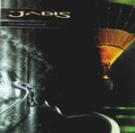

Home Artist links Label link

| Artist: | Jadis |
| Title: | Understand |
| Label: | Jadismusic JAD 004 |
| Length(s): | 44 minutes |
| Year(s) of release: | 2000 |
| Month of review: | 04/2000 |
Line up
Steve Christey - drums
Gary Chandler - guitar, vocals
Martin Orford - keyboards, backing vocals
John Jowitt - bass
Tracks
| 1) | Where In The World | 5.52
|
| 2) | Is This Real | 6.54
|
| 3) | Alive Inside | 4.51
|
| 4) | Between Here & There | 2.56
|
| 5) | Racing Sideways | 4.43
|
| 6) | Understand | 6.34
|
| 7) | Giraffe Chariot | 5.09
|
| 8) | Counting All The Seconds | 7.01
|
Summary
The fourth full CD by this band. Their Somersault, which I never heard, was not
an album that seemed to be well-received, but it seems to go differently for
this one. Orford and Jowitt are back to support the core members, Chandler
and Christey.
The music
Where In The World opens with loose drumming, followed by a mellow vocal part.
The music is more melodic rock than progressive rock, being in the rather
commercial vein of IQ albums with Menel. Most characteristic for the music
of Jadis are the vocals of Chandler and his guitarplaying. They guitarplaying
is not yet that prominent here (not melodywise at least). Orford has quite
a large role here, by his backing vocals. At the end of the track the guitar
solo is more melodic. A good song, with head and tail.
Is This Real is the next one. Again a rather relaxed track, with acoustic
guitar this time and a good vocal melody. The song writing is certainly okay,
but possibly many will find the music too easy. The audience for this kind
of music is probably not those who like their music complex. It is simply
an extension of melodic rock to a more extended song format with a little more
room for variation and the occasional instrumental intermezzo. The focus of the
track however is and stays melody and composition. It does strike me that the
music continues to be quite relaxed, but later on in the track the music takes
on a more definite character with a good guitar solo and some angry drumming.
Alive Inside has a sadness over it, but there's also a note of optimism there.
The song is similar to the previous two. The guitar solo is not tops. I prefer
Chandler in the more melodic vein. After these three songs its time for a
change and it comes in the form of a terrific willowy instrumental
Between Here & There that has a strong organ sound. Christey shows again that
he knows his chops. Racing Sideways is back to the songs with keyboards
sizzling up and down and the vocal melodies in perfect order. Jowitt is
allowed to solo around a bit in the middle, but then its back to the chorus.
The titletrack is up next and the quality does not go down on this album,
because although the music has this relaxed mood, the heavier guitars and
the introspective breaks introduce plenty of variation. Giraffe Chariot even
invites to singing along during the chorus and the high doubled vocals around
two minutes are a good move. The guitar solo opens angrily, but I think a bit
more anger could have been better. In the longest track on the album, slightly
over 7 minutes, Counting All The Seconds worthily concludes the album, with
one of the better guitarsolo's.
Addendum: I did hear Somersault, because I bought it in between preparing this
review and writing it. I found it to be much weaker than this one.
A beautiful booklet by the way.
Conclusion
Well packaged and produced melodic rock of surprisingly high melodic and
compositional quality. Certainly a lot better and more appealing than the
previous Somersault, this is one that will appeal to lovers of melodic rock
and the commercial side of IQ. Not very different from say Across The Water
in the outset, the songs here are all winners.
© Jurriaan Hage